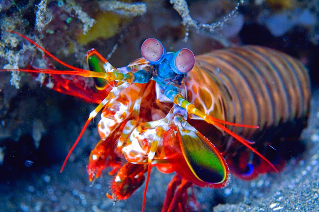

- Nome Científico : Stomatopoda (por exemplo, Odontodactylus scyllarus )
- Outros nomes : Stomatopod, gafanhoto do mar, divisor de polegar, assassino de camarão
- Características distintivas : Olhos montados em hastes móveis que podem se mover independentemente um do outro
- Tamanho médio : 10 centímetros (3,9 pol.)
- Dieta : Carnívora
- Tempo de vida : 20 anos
- Habitat : Ambientes marinhos tropicais e subtropicais rasos
- Status de Conservação : Não avaliado
- Reino : Animalia
- Filo : Artrópodes
- Subfilo : Crustacea
- Classe : Malacostraca
- Ordem : Stomatopoda
- Curiosidade : Um ataque de uma garra de camarão mantis é tão forte que pode quebrar o vidro do aquário.
STOMATOPODA e o SOCO mais forte do reino animal !
A força de um soco do camarão mantis é de 1500 newtons ou cerca de 152 quilos, enquanto o soco médio de um ser humano está na casa dos 3300 newtons ou 336 quilos. Ou seja, eles são muito menores que a gente, mas dão socos com a metade da nossa força. Nome cientifico: Odontodactylus scyllarus
Uma visão de dar inveja !
Os cientistas identificaram uma conexão importante com uma unidade chamada lóbula, que coleta informações visuais processadas por outras partes do cérebro e as converte em algo significativo, por exemplo, uma forma claramente definida. Outra associação significativa foi encontrada com uma estrutura comumente observada em insetos chamada de corpo de cogumelo, responsável pelo aprendizado e processamento de cheiros. Crustáceos não possuem exatamente um corpo de cogumelo, mas o mantis tem uma estrutura que parece servir ao mesmo propósito. A ligação de tal estrutura com o sistema visual sugere que as informações visuais processadas pelo mantis são depois compartilhadas com uma parte do cérebro que lida com a memória. “O fato de termos conseguido demonstrar que o corpo reniforme também está conectado ao corpo do cogumelo e fornece informações a ele sugere que o processamento olfativo pode ocorrer no contexto de memórias visuais já estabelecidas”, disse um dos autores do estudo, o neurocientista Nicholas Strausfeld, da Universidade do Arizona (EUA).
Segue um video do Stomatopoda em ação
Conteúdo compilado por Wellington Barbosa de Carvalho, 2022"